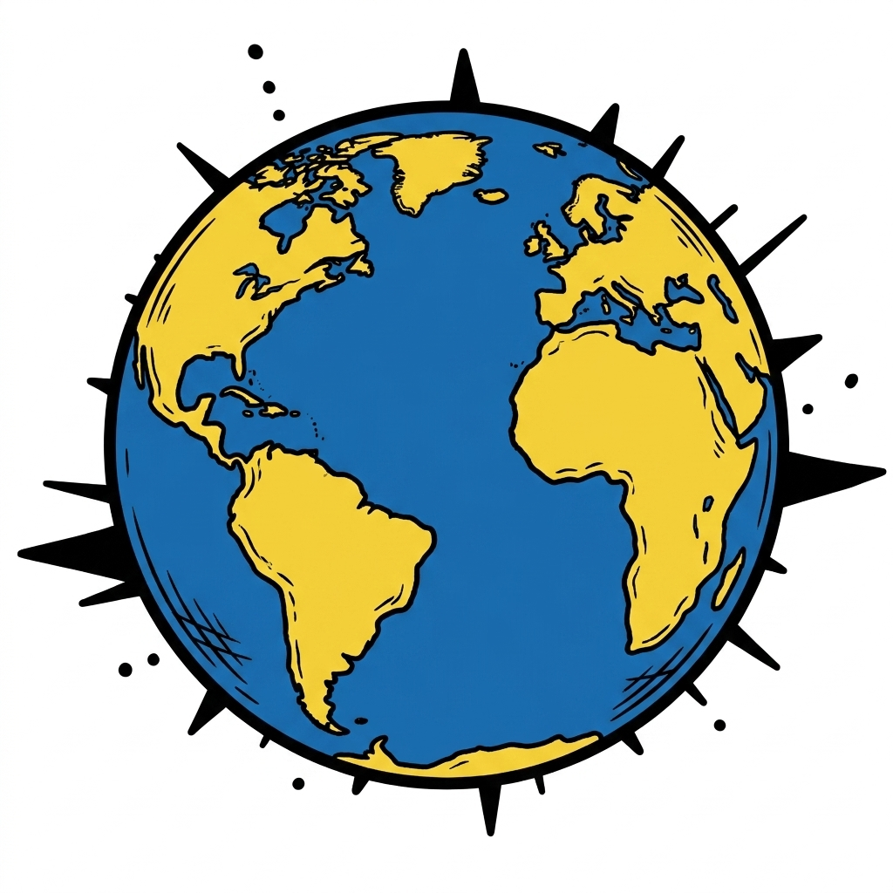
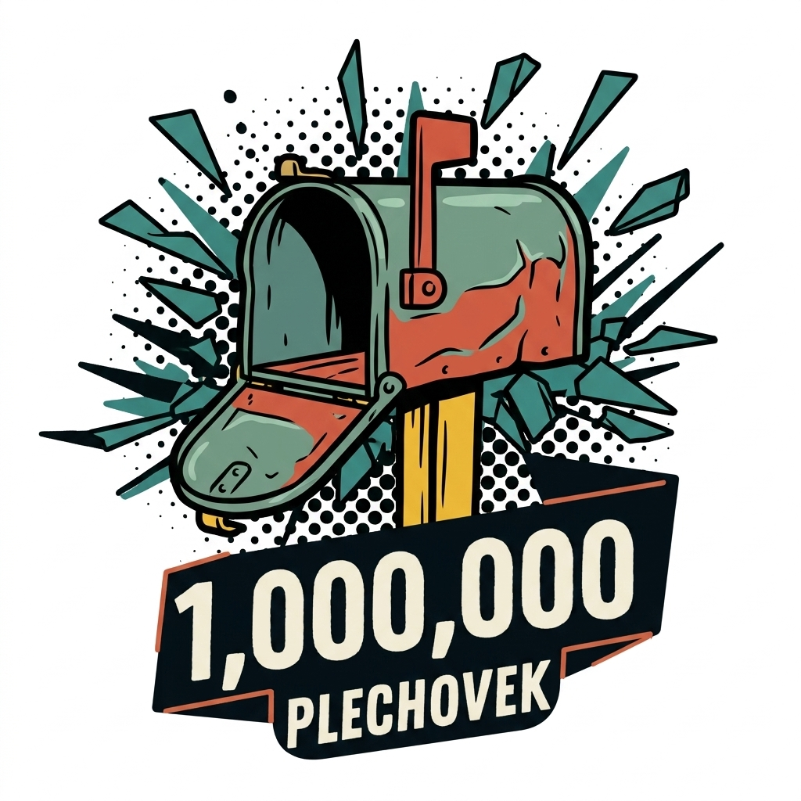

MILION PLECHOVEK
Zachraň přírodu, soutěž a bav se. Čistíme Česko společně, jednu plechovku po druhé. Až jich posbíráme milion.
📲 Otevřít aplikaci a sbírat
O projektuProjekt si klade za cíl posbírat 1 000 000 plechovek, které se válí volně v přírodě. Cílem je v lidech probudit nutnost a nutkání sbírat jakékoli odpadky, na které v přírodě narazí.
Bylo by super, kdyby si někteří uvědomili, že když se takové odpadky nevyhodí, tak se v přírodě ani neobjeví. Pořád je spousta lidí, kterým nepřijde divné na vycházce, na výletě nebo při jízdě autem vyhodit z okna vypitou, prázdnou nebo i nedopitou plechovku. A proto jsem vymyslel projekt Milion plechovek, který má lidi motivovat, aby takto vyhozené plechovky sbírali a recyklovali.
Všichni sběrači mohou pomocí aplikace sledovat svůj pokrok, mohou sledovat, kolik ušetřili energie, jak si vedou v žebříčku ostatních sběračů, a především mohou sami aktivně sbírat plechovky a šířit tuto vizi dál.
📖 Můj příběh
Příběh vznikl v roce 2024, kdy jsme se synem jeli na kole z Brna na Vysočinu. Přestože jedete malebnou krajinou, velmi často kolem krásných remízků, pořád vidíte v příkopech strašné množství nepořádku. A já jsem si všiml, že velkou část tvoří plechovky.

Asi rok mi to leželo v hlavě. Zjistil jsem, že taková plechovka je vlastně "zlatý důl" – každá se dá ze 100 % recyklovat a to donekonečna. Její recyklací se ušetří neuvěřitelných 95 % energie oproti výrobě nové.
V září 2025 jsem se vydal na svůj první sběr a nasbíral 18 plechovek na Výhonu nad Židlochovicemi. Brzy mi ale došlo, že milion sám nenasbírám – trvalo by mi to při dvou kusech denně asi 1 370 let. Proto jsem projekt otevřel pro všechny.
Zlom přišel, když jsme sbírání plechovek přirovnali k houbaření. Je to úplně stejné! Jakmile začnete, vidíte je všude a přestane vám být lhostejné je tam nechat. Navíc skrytá plechovka v trávě je při sečení smrtící past pro divoká zvířata.
Podívej se, jak to všechno začalo
Mapa úlovků

Kontakt💡 Máte nápad na zlepšení? Našli jste v aplikaci chybu, nebo víte o něčem, kam by se projekt mohl posunout dál? Budu moc rád za každou zpětnou vazbu!
Tomáš Hájek
Opatovická 150, Rajhradice, 664 61
Telefon: +420 775 284 312
E-mail: tomas@tomashajek.cz